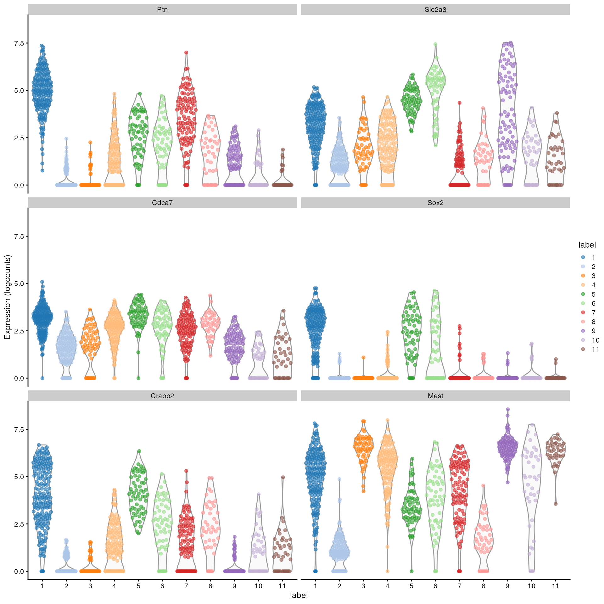

Data retrieval
sce <- WTChimeraData(samples = 5, type = "processed")
sce## class: SingleCellExperiment
## dim: 29453 2411
## metadata(0):
## assays(1): counts
## rownames(29453): ENSMUSG00000051951 ENSMUSG00000089699 ...
## ENSMUSG00000095742 tomato-td
## rowData names(2): ENSEMBL SYMBOL
## colnames(2411): cell_9769 cell_9770 ... cell_12178 cell_12179
## colData names(11): cell barcode ... doub.density sizeFactor
## reducedDimNames(2): pca.corrected.E7.5 pca.corrected.E8.5
## mainExpName: NULL
## altExpNames(0):Preprocessing
sce <- logNormCounts(sce)
sce <- runPCA(sce)Clustering
Clustering is an unsupervised learning procedure that is used to empirically define groups of cells with similar expression profiles. Its primary purpose is to summarize complex scRNA-seq data into a digestible format for human interpretation. This allows us to describe population heterogeneity in terms of discrete labels that are easily understood, rather than attempting to comprehend the high-dimensional manifold on which the cells truly reside. After annotation based on marker genes, the clusters can be treated as proxies for more abstract biological concepts such as cell types or states.
Popularized by its use in
Seurat,
graph-based clustering is a flexible and scalable technique for
clustering large scRNA-seq datasets. We first build a graph where each
node is a cell that is connected to its nearest neighbors in
the high-dimensional space. Edges are weighted based on the similarity
between the cells involved, with higher weight given to cells that are
more closely related. We then apply algorithms to identify “communities”
of cells that are more connected to cells in the same community than
they are to cells of
different communities. Each community represents a cluster that we can
use for downstream interpretation.
Here, we use the clusterCells() function from the scran package to
perform graph-based clustering using the Louvain
algorithm for community detection. All calculations are performed
using the top PCs to take advantage of data compression and denoising.
This function returns a vector containing cluster assignments for each
cell in our SingleCellExperiment object.
colLabels(sce) <- clusterCells(sce, use.dimred = "PCA",
BLUSPARAM = NNGraphParam(cluster.fun = "louvain"))
table(colLabels(sce))##
## 1 2 3 4 5 6 7 8 9 10 11 12 13 14 15
## 95 144 77 341 392 209 246 95 108 113 154 215 146 20 56We assign the cluster assignments back into our
SingleCellExperiment object as a factor in the
column metadata. This allows us to conveniently visualize the
distribution of clusters in eg. a t-SNE or a UMAP.
sce <- runUMAP(sce, dimred = "PCA")
plotReducedDim(sce, "UMAP", color_by = "label")
Exercise: The Leiden
algorithm is similar to the Louvain algorithm, but it is faster and
has been shown to result in better connected communities. Modify the
above call to clusterCells to carry out the community
detection with the Leiden algorithm instead. Visualize the results in a
UMAP plot.
Hint: The NNGraphParam constructor has an argument
cluster.args. This allows to specify arguments passed on to
the cluster_leiden function from the igraph
package. Use the cluster.args argument to parameterize the
clustering to use modularity as the objective function and a resolution
parameter of 0.5.
Marker gene detection
To interpret clustering results as obtained in the previous section, we identify the genes that drive separation between clusters. These marker genes allow us to assign biological meaning to each cluster based on their functional annotation. In the simplest case, we have a priori knowledge of the marker genes associated with particular cell types, allowing us to treat the clustering as a proxy for cell type identity.
The most straightforward approach to marker gene detection involves testing for differential expression between clusters. If a gene is strongly DE between clusters, it is likely to have driven the separation of cells in the clustering algorithm.
Here, we perform a Wilcoxon rank sum test against a log2 fold change threshold of 1, focusing on up-regulated (positive) markers in one cluster when compared to another cluster.
rownames(sce) <- rowData(sce)$SYMBOL
markers <- findMarkers(sce, test.type = "wilcox", direction = "up", lfc = 1)
markers## List of length 15
## names(15): 1 2 3 4 5 6 7 8 9 10 11 12 13 14 15The resulting object contains a sorted marker gene list for each cluster, in which the top genes are those that contribute the most to the separation of that cluster from mall other clusters.
Here, we inspect the ranked marker gene list for the first cluster.
markers[[1]]## DataFrame with 29453 rows and 18 columns
## Top p.value FDR summary.AUC AUC.2 AUC.3
## <integer> <numeric> <numeric> <numeric> <numeric> <numeric>
## Arl4c 1 2.65826e-83 3.91468e-79 0.998796 0.905482 0.990157
## Pitx2 1 2.12479e-70 6.25814e-67 0.943973 0.932968 0.764320
## Msx1 1 3.82512e-55 2.08632e-52 0.948727 0.887573 0.572112
## Slc2a3 1 4.05884e-43 1.10690e-40 0.961506 0.872515 0.918113
## Cryab 1 1.19792e-60 9.28481e-58 0.923335 0.911915 0.880519
## ... ... ... ... ... ... ...
## AC125149.2 29448 1 1 0 0 0
## AC125149.4 29449 1 1 0 0 0
## AC234645.1 29450 1 1 0 0 0
## AC168977.2 29451 1 1 0 0 0
## Vmn2r122 29453 1 1 0 0 0
## AUC.4 AUC.5 AUC.6 AUC.7 AUC.8 AUC.9
## <numeric> <numeric> <numeric> <numeric> <numeric> <numeric>
## Arl4c 0.998796 0.663561 0.906673 0.858451 0.939391 0.863840
## Pitx2 0.943973 0.798926 0.943188 0.939538 0.750360 0.406725
## Msx1 0.948727 0.494280 0.836364 0.887634 0.936510 0.741618
## Slc2a3 0.961506 0.861654 0.672929 0.680359 0.867922 0.874659
## Cryab 0.928261 0.923335 0.932460 0.932777 0.252078 0.334600
## ... ... ... ... ... ... ...
## AC125149.2 0 0 0 0 0 0
## AC125149.4 0 0 0 0 0 0
## AC234645.1 0 0 0 0 0 0
## AC168977.2 0 0 0 0 0 0
## Vmn2r122 0 0 0 0 0 0
## AUC.10 AUC.11 AUC.12 AUC.13 AUC.14 AUC.15
## <numeric> <numeric> <numeric> <numeric> <numeric> <numeric>
## Arl4c 0.978202 0.938756 0.921714 0.727181 0.092631579 0.997368
## Pitx2 0.925291 0.943609 0.868984 0.844484 0.928947368 0.942105
## Msx1 0.704238 0.495694 0.910502 0.704831 0.395789474 0.953759
## Slc2a3 0.930601 0.370472 0.953929 0.287671 0.000526316 0.877820
## Cryab 0.926782 0.929118 0.926854 0.887383 0.441052632 0.926692
## ... ... ... ... ... ... ...
## AC125149.2 0 0 0 0 0 0
## AC125149.4 0 0 0 0 0 0
## AC234645.1 0 0 0 0 0 0
## AC168977.2 0 0 0 0 0 0
## Vmn2r122 0 0 0 0 0 0The Top field provides the the minimum rank across all
pairwise comparisons. The p.value field provides the
combined p-value across all comparisons, and the
FDR field the BH-adjusted p-value for each gene.
The summary.AUC provides area under the curve (here the
concordance probability) from the comparison with the lowest
p-value, the AUC.n fields provide the AUC for each
pairwise comparison. The AUC is the probability that a randomly selected
cell in cluster A has a greater expression of gene X
than a randomly selected cell in B.
We can then inspect the top marker genes for the first cluster using
the plotExpression function from the scater package.
top.markers <- head(rownames(markers[[1]]))
plotExpression(sce, features = top.markers, x = "label", color_by = "label")
Cell type annotation
The most challenging task in scRNA-seq data analysis is arguably the interpretation of the results. Obtaining clusters of cells is fairly straightforward, but it is more difficult to determine what biological state is represented by each of those clusters. Doing so requires us to bridge the gap between the current dataset and prior biological knowledge, and the latter is not always available in a consistent and quantitative manner. Indeed, even the concept of a “cell type” is not clearly defined, with most practitioners possessing a “I’ll know it when I see it” intuition that is not amenable to computational analysis. As such, interpretation of scRNA-seq data is often manual and a common bottleneck in the analysis workflow.
To expedite this step, we can use various computational approaches that exploit prior information to assign meaning to an uncharacterized scRNA-seq dataset. The most obvious sources of prior information are the curated gene sets associated with particular biological processes, e.g., from the Gene Ontology (GO) or the Kyoto Encyclopedia of Genes and Genomes (KEGG) collections. Alternatively, we can directly compare our expression profiles to published reference datasets where each sample or cell has already been annotated with its putative biological state by domain experts. Here, we will demonstrate both approaches with several different scRNA-seq datasets.
Assigning cell labels from reference data
ref <- EmbryoAtlasData(samples = 1:2)
ref## class: SingleCellExperiment
## dim: 29452 716
## metadata(0):
## assays(1): counts
## rownames(29452): ENSMUSG00000051951 ENSMUSG00000089699 ...
## ENSMUSG00000096730 ENSMUSG00000095742
## rowData names(2): ENSEMBL SYMBOL
## colnames(716): cell_1 cell_2 ... cell_715 cell_716
## colData names(17): cell barcode ... colour sizeFactor
## reducedDimNames(2): pca.corrected umap
## mainExpName: NULL
## altExpNames(0):##
## Epiblast ExE ectoderm
## 189 110
## ExE endoderm Rostral neurectoderm
## 78 51
## Primitive Streak Mesenchyme
## 47 23
## Blood progenitors 2 Caudal epiblast
## 19 19
## Intermediate mesoderm Visceral endoderm
## 17 15
## ExE mesoderm Mixed mesoderm
## 11 11
## Pharyngeal mesoderm Nascent mesoderm
## 10 8
## Paraxial mesoderm Surface ectoderm
## 8 8
## Gut Haematoendothelial progenitors
## 7 7
## Blood progenitors 1 Caudal neurectoderm
## 4 4
## Somitic mesoderm Caudal Mesoderm
## 4 3
## Notochord PGC
## 2 2
## Erythroid1
## 1
ref <- logNormCounts(ref)Some cleaning - remove cells for cell type annotation is missing.
nna <- !is.na(ref$celltype)
ref <- ref[,nna]Restrict to genes shared between query and reference dataset.
rownames(ref) <- rowData(ref)$SYMBOL
isect <- intersect(rownames(sce), rownames(ref))
sce <- sce[isect,]
ref <- ref[isect,]Convert sparse assay matrices to regular dense matrices for input to SingleR.
res <- SingleR(test = sce.mat, ref = ref.mat, labels = ref$celltype)